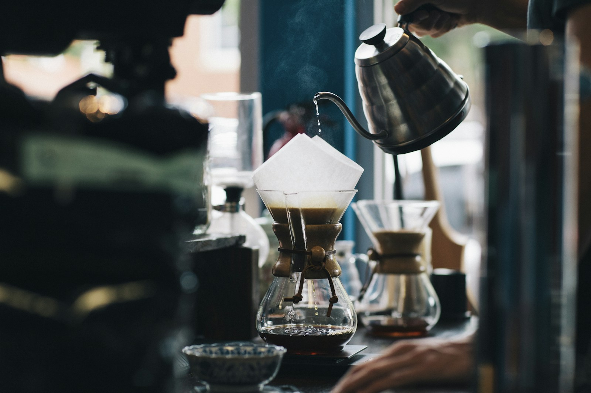
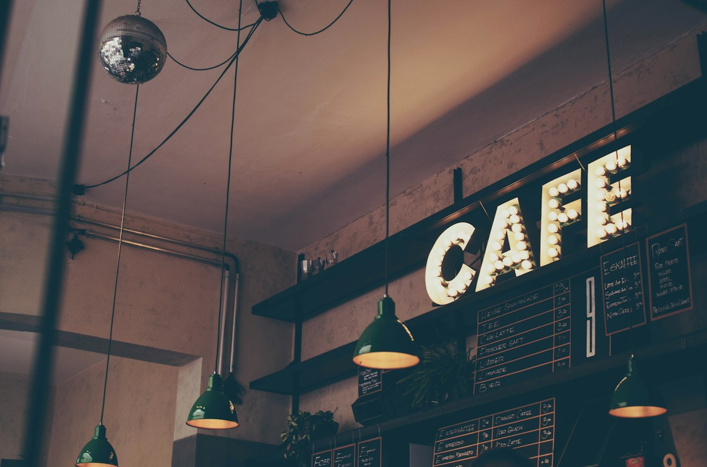

House Filter
RM 8Freshly brewed black coffee. A straightforward cup for an easy start.
YOUR NEIGHBOURHOOD COFFEE BREAK
A morning ritual. An afternoon catch-up. A little room to slow down, one thoughtfully made cup at a time.
Explore our menu
A LITTLE PAUSE IN YOUR DAY.
A seat for your everyday moments.HELLO, WE'RE SLOW MORNING
We imagined a neighbourhood café where busy students and working neighbours could take a breath. A welcoming table, a familiar cup and something fresh from the pastry counter.
Whether you are meeting a friend or enjoying a quiet moment between classes, there is always room to settle in.
Simple favourites, made one cup at a time.
A friendly space for a catch-up or a quiet break.
Take a seat and make a little time for yourself.
TAKE A MOMENT
Take a short visual tour of the cups, corners and little treats that inspired our café concept.
12-second photo film · No audio
Use the player controls to play, pause or view fullscreen.
OUR CAFÉ MOOD, IN A FEW MOMENTS.
LET'S MAKE TIME
Have a question about the menu or our café concept? Try the contact form.
This is a fictional café website created for ICT2215. The form is a display-only demonstration and does not send or store messages.